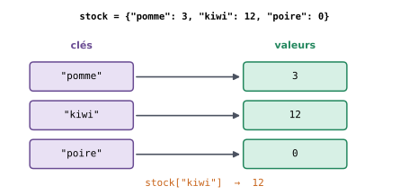
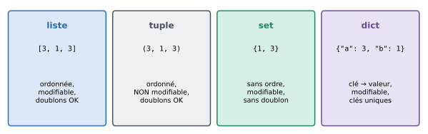

7. Dictionnaires, tuples et sets#
Objectifs du chapitre
À la fin de ce chapitre, vous saurez :
créer un dictionnaire et y associer des valeurs à des clés ;
lire, ajouter, modifier et supprimer des entrées ;
parcourir un dictionnaire par clés, par valeurs ou par couples clé/valeur ;
utiliser un dictionnaire pour compter des occurrences ;
utiliser des tuples (et les « déballer » dans plusieurs variables) et des sets ;
choisir entre une liste, un dictionnaire, un tuple et un set.
Prérequis : chapitres 1 à 6. Durée indicative : 2h.
Comme une liste, un dictionnaire est une collection de données. Mais au lieu de repérer chaque valeur par une position (un indice entier), on la repère par une clé, que l’on choisit librement. Chaque entrée d’un dictionnaire est donc une association entre une clé et une valeur, comme dans un dictionnaire papier où l’on associe une définition à chaque mot.
On utilise souvent des chaînes de caractères comme clés : par exemple, pour représenter le stock d’un primeur, on associe à chaque nom de fruit le nombre de fruits disponibles.


Fig. 7.1 Un dictionnaire associe des valeurs à des clés. On accède à une valeur grâce à sa clé.#
Les clés sont des valeurs quelconques (non modifiables : des chaînes, des nombres…), la seule contrainte étant qu’une même clé ne peut apparaître qu’une fois dans un dictionnaire.
7.1. Créer un dictionnaire#
Pour définir un dictionnaire, on écrit ses paires clé: valeur entre accolades, séparées par des virgules :
stock = {"pomme": 3, "kiwi": 12, "poire": 0}
print(stock)
{'pomme': 3, 'kiwi': 12, 'poire': 0}
Un dictionnaire vide se crée avec des accolades vides :
mon_dico = {}
print(mon_dico)
print(len(stock)) # nombre de paires clé/valeur
{}
3
7.2. Lire le contenu d’un dictionnaire#
Pour lire la valeur associée à une clé, on utilise la même syntaxe que pour les listes, en remplaçant l’indice par la clé :
stock = {"pomme": 3, "kiwi": 12, "poire": 0}
print(stock["kiwi"])
12
Si la clé demandée n’existe pas, on obtient une erreur KeyError :
print(stock["banane"])
---------------------------------------------------------------------------
KeyError Traceback (most recent call last)
Cell In[4], line 1
----> 1 print(stock["banane"])
KeyError: 'banane'
Pour éviter cela, on peut d’abord tester si la clé est présente avec le mot-clé in (qui teste la présence d’une clé, et non d’une valeur) :
if "banane" in stock:
print(stock["banane"])
else:
print("Pas de bananes")
Pas de bananes
ou bien utiliser la méthode get, qui permet de préciser une valeur par défaut à retourner si la clé n’existe pas :
print(stock.get("kiwi", 0))
print(stock.get("banane", 0))
12
0
7.3. Modifier le contenu d’un dictionnaire#
Pour modifier la valeur associée à une clé, on utilise la même syntaxe que pour les listes :
stock = {"pomme": 3, "kiwi": 12, "poire": 0}
stock["pomme"] = 10
print(stock)
{'pomme': 10, 'kiwi': 12, 'poire': 0}
Et si la clé n’existe pas encore, la même syntaxe crée une nouvelle paire clé/valeur (contrairement aux listes, pour lesquelles un indice trop grand provoque une erreur) :
stock["banane"] = 6
print(stock)
{'pomme': 10, 'kiwi': 12, 'poire': 0, 'banane': 6}
Enfin, pour supprimer une paire clé/valeur, on utilise le mot-clé del :
del stock["poire"]
print(stock)
{'pomme': 10, 'kiwi': 12, 'banane': 6}
Testez-vous
Que contient d à la fin de ce programme ? Qu’affiche-t-il ?
d = {"a": 1, "b": 2}
d["c"] = 3
d["a"] = d["a"] + 10
del d["b"]
print(len(d), d.get("b", "absent"), "c" in d, 3 in d)
Réponse
d vaut {"a": 11, "c": 3} et le programme affiche :
2 absent True False
3 in d vaut False car in teste la présence d’une clé, et 3 n’est pas une clé de d (c’est une valeur).
7.4. Parcourir un dictionnaire#
Comme pour les listes, il existe trois façons de parcourir un dictionnaire.
7.4.1. Parcours par clés#
Pour parcourir les clés, on utilise la méthode keys (ou, plus simplement, on parcourt directement le dictionnaire, ce qui revient au même) :
stock = {"pomme": 3, "kiwi": 12, "poire": 0}
for fruit in stock.keys():
print(fruit)
pomme
kiwi
poire
7.4.2. Parcours par valeurs#
Pour parcourir uniquement les valeurs, on utilise la méthode values :
for quantite in stock.values():
print(quantite)
3
12
0
7.4.3. Parcours par couples clé/valeur#
Pour accéder simultanément aux clés et aux valeurs associées, on utilise la méthode items :
for fruit, quantite in stock.items():
print(f"{fruit} : {quantite}")
pomme : 3
kiwi : 12
poire : 0
À propos de l’ordre
Depuis Python 3.7, les dictionnaires conservent l’ordre dans lequel les clés ont été insérées, et c’est dans cet ordre qu’ils sont parcourus.
Mais ils ne sont pas pour autant « ordonnés » au sens des listes : il n’y a pas de « premier élément » accessible par d[0].
Pour que votre code soit clair, évitez de faire reposer sa logique sur l’ordre des clés d’un dictionnaire.
7.5. Exemple guidé : compter des occurrences#
Une utilisation très fréquente des dictionnaires est le comptage : combien de fois chaque mot apparaît-il dans un texte ? combien d’étudiants ont obtenu chaque note ? Comptons les votes d’un sondage :
votes = ["pizza", "sushi", "pizza", "crêpes", "pizza", "crêpes"]
compteurs = {}
for vote in votes:
if vote in compteurs:
compteurs[vote] += 1 # on a déjà vu ce vote : on incrémente
else:
compteurs[vote] = 1 # première fois : on crée l'entrée
print(compteurs)
{'pizza': 3, 'sushi': 1, 'crêpes': 2}
Le schéma est toujours le même : si la clé existe déjà, on met à jour sa valeur ; sinon, on la crée.
Avec la méthode get, on peut même écrire les deux cas en une seule ligne : compteurs[vote] = compteurs.get(vote, 0) + 1.
7.6. Des valeurs plus riches#
Les valeurs d’un dictionnaire peuvent être de n’importe quel type, y compris des listes ou d’autres dictionnaires. Cela permet de représenter des données structurées :
notes = {
"Aude": [12, 15, 17],
"Ali": [9, 14],
"Chloé": [16, 13, 18, 11]
}
for prenom, liste_notes in notes.items():
moyenne = sum(liste_notes) / len(liste_notes)
print(f"{prenom} : moyenne de {moyenne:.2f} sur {len(liste_notes)} notes")
Aude : moyenne de 14.67 sur 3 notes
Ali : moyenne de 11.50 sur 2 notes
Chloé : moyenne de 14.50 sur 4 notes
etudiant = {
"nom": "Martin",
"prenom": "Aude",
"date_de_naissance": {"jour": 1, "mois": 6, "annee": 2005}
}
print(etudiant["date_de_naissance"]["annee"])
2005
Nous retrouverons ce type de structure au chapitre 9, avec les fichiers JSON.
Liste ou dictionnaire ?
Lorsque l’on doit stocker une série de valeurs, on a donc le choix entre une liste et un dictionnaire.
On utilise un dictionnaire dès lors que l’on veut mettre en évidence une correspondance entre des clés et des valeurs, comme dans l’exemple suivant, dans lequel on associe à chaque numéro étudiant un entier (pouvant représenter une note, un nombre de photocopies restantes autorisées, ou autre) :
{"2170000": 13, "2180000": 23}
On utilise une liste pour stocker une série ordonnée de valeurs, comme une liste de prénoms :
["Chloé", "Ali", "Margot", "Antoine"]
Différences avec R et SAS
Un dictionnaire ressemble à une liste nommée de R (
list(pomme = 3, kiwi = 12), avec un accèsstock[["kiwi"]]), ou à un format SAS (PROC FORMAT) qui associe des libellés à des codes.Avec
pandas, les dictionnaires servent souvent à créer des tableaux (pd.DataFrame({...}), chapitre 11) et à recoder des valeurs (méthodemap, chapitre 12).
7.7. Deux autres collections : les tuples et les sets#
Pour terminer ce chapitre, voyons rapidement deux autres types de collections, que vous croiserez régulièrement (notamment avec pandas).
7.7.1. Les tuples#
Un tuple s’écrit comme une liste, mais avec des parenthèses (facultatives) au lieu des crochets.
Il ressemble en de nombreux points à une liste (accès par indice, len, boucle for…), à une différence majeure près : un tuple ne peut pas être modifié une fois créé.
point = (3, 7)
print(point[0], len(point))
3 2
point[0] = 5
---------------------------------------------------------------------------
TypeError Traceback (most recent call last)
Cell In[17], line 1
----> 1 point[0] = 5
TypeError: 'tuple' object does not support item assignment
Vous en avez déjà rencontré sans le savoir : quand une fonction retourne plusieurs valeurs séparées par des virgules (return quotient, reste), elle retourne en fait un tuple.
On peut répartir les valeurs d’un tuple dans plusieurs variables en une seule instruction (on parle de déballage) :
x, y = point
print(x, y)
3 7
C’est ce qui se passe dans for cle, valeur in d.items() : à chaque tour, items fournit un tuple (clé, valeur), déballé dans deux variables.
Le déballage permet aussi d’échanger deux variables très simplement :
a, b = 5, 8
a, b = b, a
print(a, b)
8 5
Avec pandas, vous verrez par exemple que la taille d’un tableau de données est un tuple (nombre de lignes, nombre de colonnes).
7.7.2. Les sets#
Un set (ou ensemble) est une collection sans ordre et sans doublon, notée avec des accolades comme les dictionnaires, mais sans valeurs associées. Son utilisation la plus courante consiste à éliminer les doublons d’une liste, ou à connaître les valeurs distinctes d’une série de données :
villes = ["Rennes", "Brest", "Rennes", "Vannes", "Brest", "Rennes"]
distinctes = set(villes)
print(distinctes)
print(len(distinctes), "villes différentes")
{'Vannes', 'Rennes', 'Brest'}
3 villes différentes
On peut ajouter un élément avec add, tester l’appartenance avec in, et calculer intersections (&), unions (|) et différences (-) :
a = {1, 2, 3, 4}
b = {3, 4, 5}
print(a & b, a | b, a - b)
{3, 4} {1, 2, 3, 4, 5} {1, 2}
Attention : {} crée un dictionnaire vide ; un set vide s’écrit set().
7.7.3. Récapitulatif#


Fig. 7.2 Les quatre types de collections de base en Python.#
Testez-vous
Quelle structure utiliseriez-vous pour stocker :
les températures relevées chaque heure pendant une journée ?
la population de chaque commune de Bretagne ?
la position (latitude, longitude) d’une ville ?
la liste des espèces d’oiseaux observées au moins une fois (sans répétition) ?
Réponse
Une liste : une série ordonnée de valeurs.
Un dictionnaire : on associe une valeur (la population) à une clé (le nom de la commune).
Un tuple : deux valeurs qui vont ensemble et ne changent pas.
Un set : on ne veut pas de doublons et l’ordre n’a pas d’importance.
7.8. Exercices#
Exercice 7.1 : Somme des valeurs ★
Écrivez une fonction qui retourne la somme des valeurs d’un dictionnaire fourni en argument, en supposant que toutes ces valeurs soient numériques.
Solution
def somme_valeurs(d):
s = 0
for v in d.values():
s += v
return s
print(somme_valeurs({"a": 12, "zz": 1.5, "AAA": 0}))
On aurait aussi pu écrire return sum(d.values()).
Exercice 7.2 : Occurrences des mots ★★
Écrivez une fonction qui compte le nombre d’occurrences de chacun des mots d’une chaîne de caractères et retourne le résultat sous forme de dictionnaire :
print(compte_occurrences("la vie est belle c'est la vie"))
# Doit afficher : {'la': 2, 'vie': 2, 'est': 1, 'belle': 1, "c'est": 1}
Indice
Découpez la chaîne en mots avec split, puis reprenez le principe de l’exemple guidé sur les votes.
Solution
def compte_occurrences(s):
d = {}
for mot in s.split():
d[mot] = d.get(mot, 0) + 1
return d
print(compte_occurrences("la vie est belle c'est la vie"))
Exercice 7.3 : Le mot le plus fréquent ★★
Écrivez une fonction plus_frequent(d) qui prend en argument un dictionnaire de comptages (comme celui retourné par la fonction de l’exercice précédent) et retourne la clé associée à la plus grande valeur.
Indice
C’est la même idée que l’argmax d’une liste (exercice 5.1), mais en parcourant les couples clé/valeur avec items.
Solution
def plus_frequent(d):
cle_max = None
valeur_max = None
for cle, valeur in d.items():
if valeur_max is None or valeur > valeur_max:
cle_max = cle
valeur_max = valeur
return cle_max
print(plus_frequent({"pizza": 3, "sushi": 1, "crêpes": 2}))
L’utilisation de None comme valeur initiale permet de gérer proprement le premier tour de boucle (et le cas du dictionnaire vide, pour lequel la fonction retourne None).
Exercice 7.4 : Annuaire inversé ★★
On dispose d’un annuaire sous forme de dictionnaire associant à chaque nom un numéro de téléphone.
Écrivez une fonction inverse_annuaire(annuaire) qui retourne un nouveau dictionnaire associant à chaque numéro le nom correspondant.
Solution
def inverse_annuaire(annuaire):
inverse = {}
for nom, numero in annuaire.items():
inverse[numero] = nom
return inverse
annuaire = {"Aude": "0601020304", "Ali": "0605060708"}
print(inverse_annuaire(annuaire))
Que se passe-t-il si deux personnes partagent le même numéro ? Puisqu’une clé ne peut apparaître qu’une fois, seul le dernier nom rencontré est conservé.
Exercice 7.5 : Bulletin de notes ★★★
On représente les notes d’une classe par un dictionnaire associant à chaque prénom la liste de ses notes (comme dans la section « Des valeurs plus riches »).
Écrivez une fonction
moyennes(notes)qui retourne un dictionnaire associant à chaque prénom sa moyenne.Écrivez une fonction
admis(notes)qui retourne la liste triée par ordre alphabétique des prénoms dont la moyenne est supérieure ou égale à 10.Écrivez une fonction
ajoute_note(notes, prenom, note)qui ajoute une note à un étudiant, en créant son entrée s’il n’existe pas encore.
Solution
def moyennes(notes):
resultat = {}
for prenom, liste_notes in notes.items():
resultat[prenom] = sum(liste_notes) / len(liste_notes)
return resultat
def admis(notes):
liste_admis = []
for prenom, moyenne in moyennes(notes).items():
if moyenne >= 10:
liste_admis.append(prenom)
return sorted(liste_admis)
def ajoute_note(notes, prenom, note):
if prenom in notes:
notes[prenom].append(note)
else:
notes[prenom] = [note]
notes = {"Aude": [12, 15, 17], "Ali": [9, 8], "Chloé": [16, 13, 18, 11]}
print(moyennes(notes))
print(admis(notes))
ajoute_note(notes, "Ali", 20)
ajoute_note(notes, "Margot", 14)
print(notes)
print(admis(notes))
Remarquez que ajoute_note ne retourne rien : elle modifie le dictionnaire reçu en argument (comme pour les listes, le dictionnaire n’est pas copié lors de l’appel de la fonction).
Exercice 7.6 : Lettres communes ★
Écrivez une fonction lettres_communes(mot1, mot2) qui retourne la liste triée des lettres présentes à la fois dans mot1 et dans mot2.
Solution
def lettres_communes(mot1, mot2):
return sorted(set(mot1) & set(mot2))
print(lettres_communes("python", "typographie"))
set appliqué à une chaîne donne l’ensemble de ses caractères, et sorted accepte n’importe quelle collection et retourne toujours une liste.
7.9. Bilan du chapitre#
À retenir
Création :
d = {"cle1": valeur1, "cle2": valeur2}oud = {}.Lecture :
d[cle](erreurKeyErrorsi la clé n’existe pas) oud.get(cle, valeur_par_defaut).Écriture :
d[cle] = valeur(crée ou remplace) ; suppression :del d[cle].cle in dteste la présence d’une clé.Parcours :
for cle in d.keys(),for valeur in d.values(),for cle, valeur in d.items().Compter :
d[x] = d.get(x, 0) + 1.Tuple :
(3, 7), non modifiable ; déballagex, y = point. Set :set(liste)pour les valeurs distinctes.
Faites le point : êtes-vous capable de…
créer un dictionnaire, lire et modifier une valeur à partir de sa clé ?
éviter une
KeyErroravecinouget?parcourir un dictionnaire en récupérant à la fois les clés et les valeurs ?
compter des occurrences avec un dictionnaire ?
déballer un tuple et obtenir les valeurs distinctes d’une liste ?
choisir entre une liste, un dictionnaire, un tuple et un set ?